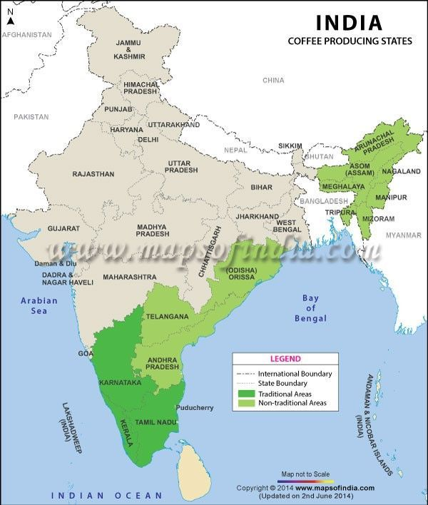

Coffees are grown in shade and commonly with two tiers of shade. Growing altitudes of coffee range between 1,000 to 1,500 m above sea level for Arabica (premier coffee), and 500 to 1,000 m for Robusta (lower quality). Both varieties are planted in well-drained soil conditions that favour rich organic matter. Coffee plantation is done along hilly slope. Slopes of Arabica tend to be gentle to moderate, while Robusta slopes are gentle to fairly level.
Varieties: Arabica and Robusta Temperature: 16-28°C Rainfall: 150-250 cm Soil type: Well-drained forest loam Major Producers: Karnataka, Tamil Nadu, Kerala, Andhra Pradesh, Telangana, Odisha, Assam, Meghalaya, Arunachal Pradesh, Manipur, Nagaland Highest Producer: Karnataka Highest Producing Country: Brazil